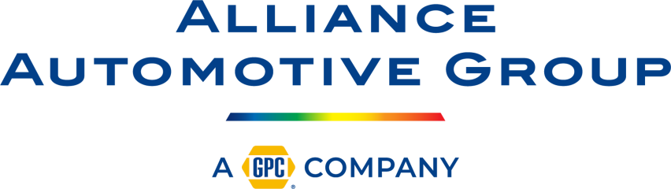
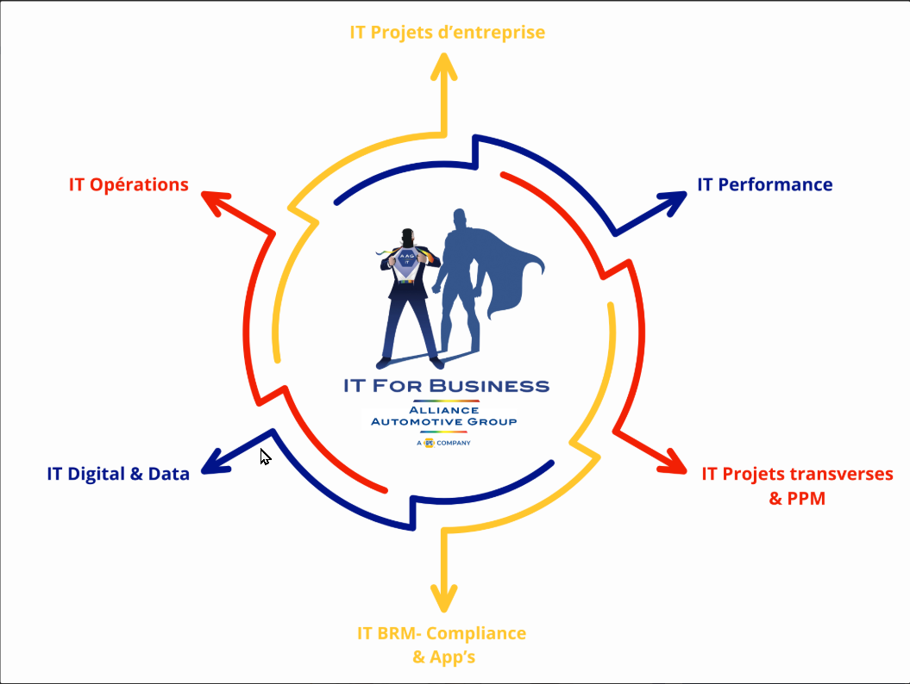
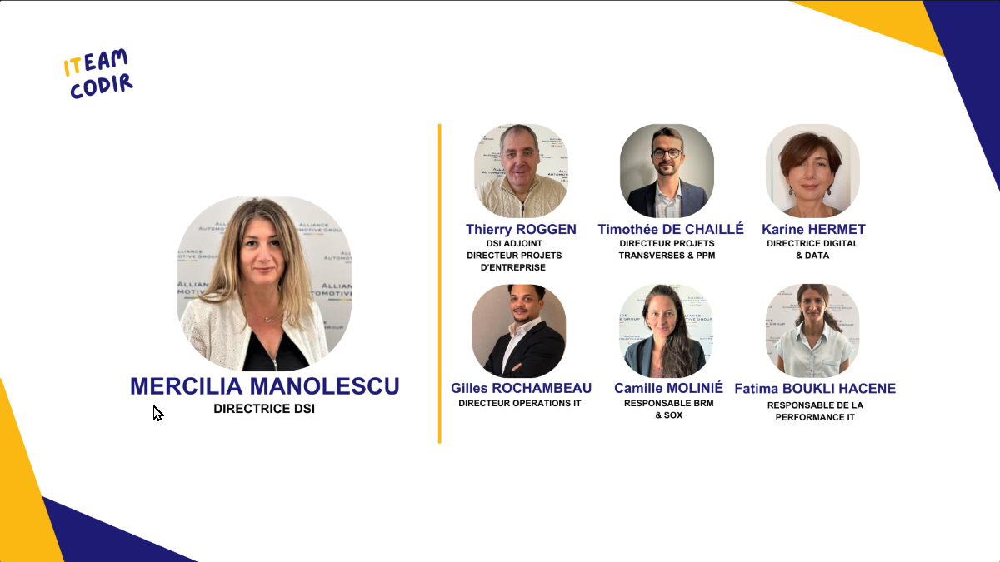
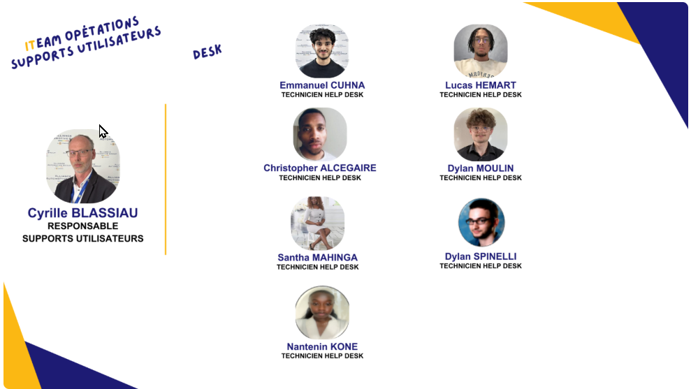

Entreprise

Alliance Automotive Group
Technicien Service Desk - AlternanceAlliance Automotive Group (AAG) est un acteur majeur de la distribution indépendante de pièces et de fournitures pour le marché de la réparation automobile et poids lourd en Europe. Filiale du géant américain Genuine Parts Company (GPC), le groupe réalise un chiffre d'affaires mondial de plus de 20 milliards d'euros.
En France, AAG représente une force de frappe logistique et commerciale majeure :
- 1,2 Milliard d'€ de chiffre d'affaires annuel.
- 4 500 collaborateurs.
- 16 plateformes de distribution.
- 1 000 points de vente (dont 250 filiales).
Notre mission, "WE CARE FOR REPAIR", est de faciliter la réparation automobile et poids lourds partout en France. L'entreprise s'appuie sur 5 valeurs fondamentales :
Organisation de la DSI
La Direction des Systèmes d'Information (IT For Business) est structurée pour soutenir la performance et la transformation digitale du groupe.

Vue d'ensemble IT For Business

Le Comité de Direction IT (CODIR)

Support Service Desk (Mon Équipe)
Mes Missions Principales
- Support Utilisateur : Gestion des incidents (Niveau 1) et des demandes de service via l'outil de ticketing. Assistance à distance.
- Administration Système : Gestion quotidienne de l'Active Directory (création de comptes, groupes de sécurité) et administration Office 365.
- Gestion des Incidents Majeurs (P1) : Application de la procédure d'urgence pour garantir la continuité de service et le respect des SLA.
- Amélioration Continue (ITIL) : Rédaction de procédures techniques, gestion de la base de connaissances et optimisation des processus de support.